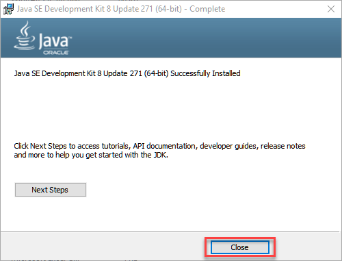

Si të shkarkoni dhe instaloni Java JDK 8 në Windows 10 (64-bit)
Java Development Kit (JDK) ju lejon të kodoni dhe ekzekutoni programe Java. Është e mundur që të instaloni
disa versione JDK në të njëjtin PC. Por rekomandohet të instaloni vetëm versionin më të fundit.
Më poshtë janë hapat se si të instaloni Java në Windows 10 për JDK 8 shkarkim falas për 32 bit ose shkarkim
JDK8
për Windows 64 bit dhe instalim
Hapi 1) Klikoni kete link. Klikoni në
JDK Download for Java.
Hapi 2)
- Accept License Agreement
- Shkarkoni Java 8 JDK për versionin tuaj 32 bit ose shkarko JDK 64 bit.
Hapi 3)
Hapi 4) Pasi të përfundojë shkarkimi i Java JDK 8, ekzekutoni file-n exe për instalim JDK. Klikoni Next
Hapi 5) Zgjidhni 'PATH'-in për të instaluar Java në Windows ose Mund ta lini atë të parazgjedhur. Kliko
Next.
Hapi 6) Pasi të keni instaluar Java në Windows, klikoni Close

Please Log in or Sing up to learn more
about Java